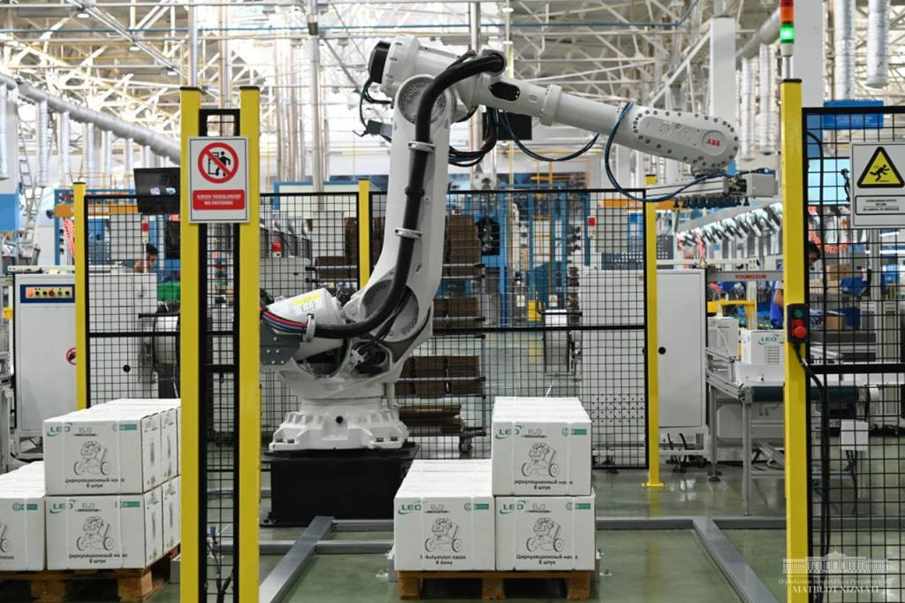
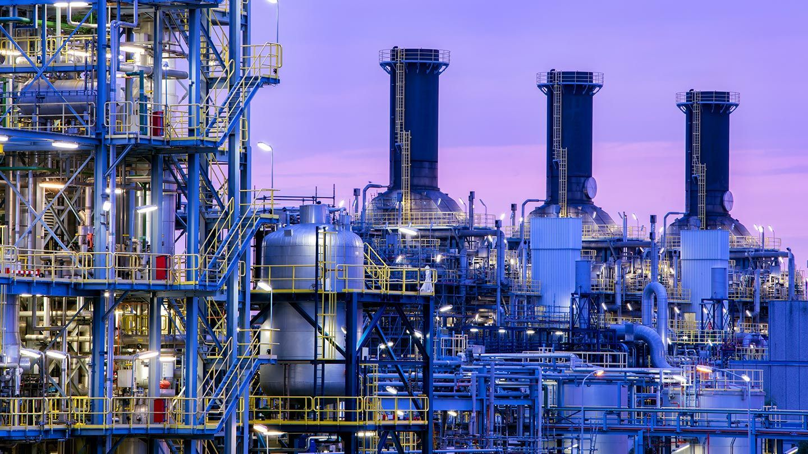

"Sanoatning yangi texnologik darajasi:"
Qiymati $52 milliardlik 782 ta yangi sanoat va infratuzilma loyihalari ishga tushmoqda. Xomashyo eksportidan tayyor mahsulot ishlab chiqarishga o‘tish orqali qo‘shilgan qiymat zanjiri kengaytirildi.
O‘zbekiston iqtisodiyoti 2026-yilda o‘zining sanoat va texnologik transformatsiyasining yangi bosqichiga qadam qo‘ymoqda. Bu davrda davlatning asosiy strategiyasi shunchaki resurslarni qazib olish emas, balki ularni mamlakat ichida chuqur qayta ishlab, yuqori qo‘shilgan qiymatga ega tayyor mahsulotlar yaratishga qaratilgan. Jami qiymati 52 milliard dollarlik 782 ta yangi loyihaning ishga tushirilishi nafaqat raqamlarda, balki butun iqtisodiy zanjirning tubdan o‘zgarishida namoyon bo‘ladi. Bu loyihalarning 228 tasi yirik sanoat quvvatlari bo‘lib, ular yiliga milliardlab dollarlik eksport imkoniyatlarini yaratadi.
Sanoatning drayveri hisoblangan metallurgiya va tog‘-kon sohasi bu o‘zgarishlarning markazida turibdi. Masalan, Olmaliq kon-metallurgiya kombinatida quvvati yiliga 300 ming tonna mis katodi bo‘lgan yangi metallurgiya majmuasi barpo etilmoqda. Misni shunchaki xomashyo sifatida sotish o‘rniga, undan elektrotexnika, qayta tiklanuvchi energiya uskunalari va yuqori texnologiyali kabellar ishlab chiqarish zanjiri kengaytirilmoqda. Shuningdek, Navoiydagi oltin konlarida ma’dan qazib olish bo‘yicha 320 million dollarlik yangi loyihalar ishga tushirilib, qo‘shimcha 2 million tonna ma’dan qayta ishlanadi. Namangan viloyatida esa oltin va kumush konlarini o‘zlashtirish orqali zargarlik sanoatiga xomashyo yetkazib berish va tayyor mahsulot eksportini oshirish ko‘zda tutilgan.

Kimyo sanoatida ham ulkan burilishlar kuzatilmoqda. “Samarqand kimyo” zavodida 381 million dollarlik investitsiya hisobiga yiliga 370 ming tonna fosforli va 540 ming tonna murakkab o‘g‘itlar ishlab chiqarish yo‘lga qo‘yilmoqda. Qashqadaryo viloyatida esa 200 million dollarlik loyiha doirasida maishiy kimyo va polimerlar uchun zarur bo‘lgan alkilbenzol ishlab chiqarish boshlanadi. Bu mahsulotlar ilgari to‘liq chetdan olib kelingan bo‘lsa, endilikda mahalliylashtirish darajasi keskin oshib, tayyor yuvish vositalari va plastik buyumlar ishlab chiqarish uchun poydevor bo‘ladi. 2026-yil yakuniga ko‘ra, eksport tarkibida tayyor va yarim tayyor mahsulotlar ulushi 55 foizdan oshishi kutilmoqda, bu esa mamlakatning xomashyo bog‘liqligidan qutulayotganini anglatadi.
Texnologik darajani oshirishda raqamli iqtisodiyot va sun’iy intellekt alohida o‘rin tutadi. Toshkent, Buxoro va Farg‘ona kabi hududlarda 4 ta yirik ma’lumotlar markazi (data-center), superkompyuterlar va 15 ta universitetda sun’iy intellekt laboratoriyalari tashkil etilmoqda. Bu infratuzilma sog‘liqni saqlash, qishloq xo‘jaligi, bank va transport sohalarida 100 dan ortiq innovatsion loyihalarni amalga oshirish imkonini beradi. Hatto kosmik tadqiqotlar sohasida ham O‘zbekiston o‘zining birinchi milliy sun’iy yo‘ldoshini uchirish va ilk kosmonavtini koinotga yuborish dasturlarini aynan shu davrda faollashtirmoqda. Bu sa’y-harakatlar O‘zbekistonni mintaqadagi texnologik xab (hub) markaziga aylantirishga qaratilgan.

Infratuzilmaviy rivojlanish haqida gapirganda, 500 kilometrdan ortiq yangi temir yo‘llar qurilishi va shaharlarni tezyurar poyezdlar bilan bog‘lash loyihalarini ta’kidlash lozim. 2026-yil “Mahallalarni qo‘llab-quvvatlash va ijtimoiy farovonlik yili” deb e’lon qilinishi munosabati bilan, sanoat zonalari aynan chekka hududlarga yaqinlashtirilmoqda. Bu esa qishloq joylarda istiqomat qiluvchi aholi uchun munosib ish o‘rinlari yaratish va kambag‘allikni qisqartirishning asosiy vositasiga aylandi. Jami investitsiyalar hajmi 50 milliard dollardan oshishi kutilayotgan bir sharoitda, iqtisodiy o‘sish sur’ati 6,6 foizni tashkil etishi va yalpi ichki mahsulot hajmi 160 milliard dollardan oshishi maqsad qilingan.
Ushbu islohotlarning yakuniy maqsadi — “Yangi O‘zbekiston” iqtisodiyotini global qiymat zanjiriga integratsiya qilishdir. Bugungi kunda har bir dollar investitsiya nafaqat zavod qurishga, balki zamonaviy bilimlarni olib kirish, mahalliy mutaxassislarni yangi texnologiyalarda ishlashga o‘rgatish va resurslarni (suv, elektr energiyasi) tejaydigan ekologik toza ishlab chiqarishni yo‘lga qo‘yishga xizmat qilmoqda. Sanoatdagi bu yangi texnologik daraja O‘zbekistonni 2030-yilga borib yuqori daromadli davlatlar qatoriga kirish poydevorini mustahkamlamoqda.